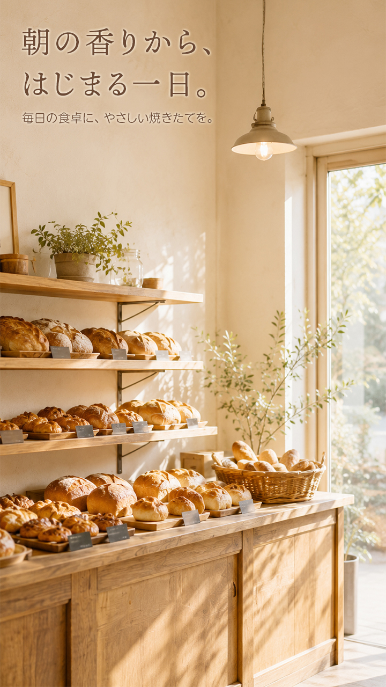
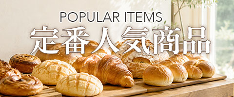
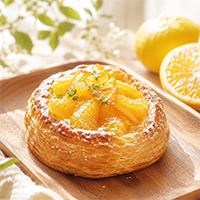
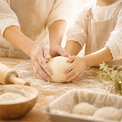
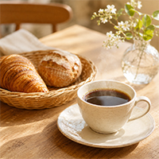
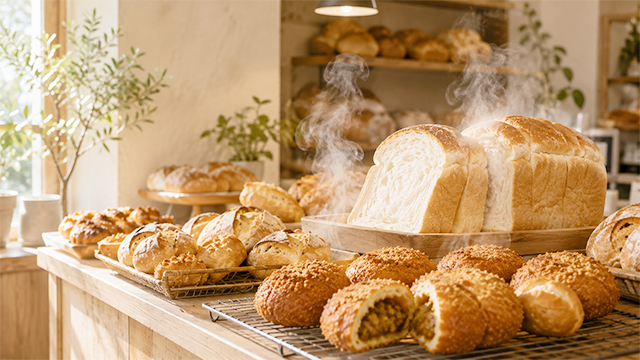
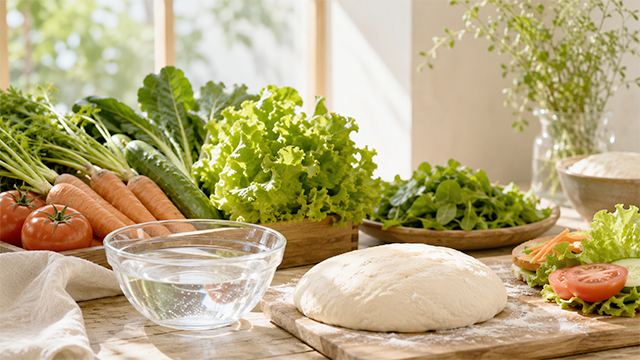

旬の夏みかんを使った、爽やかな甘さの季節限定パンが焼き上がりました。

親子で生地をこねながら、焼きたてパンを作る楽しさを体験していただけます。

イートインで、パンによく合う香り豊かな自家焙煎コーヒーをお楽しみいただけます。
こむぎ日和のYouTubeでは、パンづくりの工程や職人の技を、わかりやすく紹介しています。人気商品の作り方や新商品の開発風景、イベントの様子など、店頭だけでは伝えきれない魅力をお届けします。

いつ来ても、焼きたてに出会える。
パンの種類に合わせて、焼き上げる時間を細かく調整。カレーパンはこまめに揚げ、食パンも時間を分けて焼くことで、朝だけでなく一日のさまざまな時間に、できたてのおいしさをお届けします。

地元野菜と、仕込みの水まで丁寧に。
惣菜パンには、提携する地元農家から届く新鮮な野菜を使用。野菜の洗浄やパン生地の仕込みにはイオン活性化水を取り入れ、野菜のみずみずしい食感と、パンのなめらかな口あたりを大切にしています。
こむぎ日和のこだわりを見る→